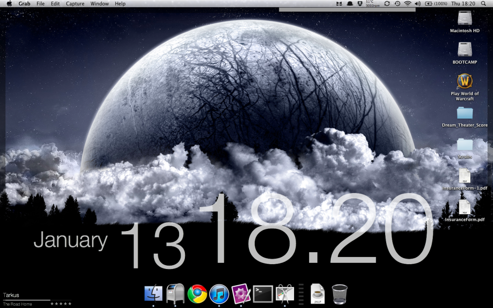

So today I discovered two awesome utilities for customizing a Mac desktop: GeekTool and Bowtie. GeekTool allows you to display files, images, and the output of shell scripts on your desktop. It seems to be very powerful, but I just used it to display the current date and time. Bowtie is a nice, customizable remote for iTunes that has tons of keyboard shortcuts and integrates with Last.fm. Combining those two apps with a nice wallpaper and some tweaks to my dock, I was able to make this.
